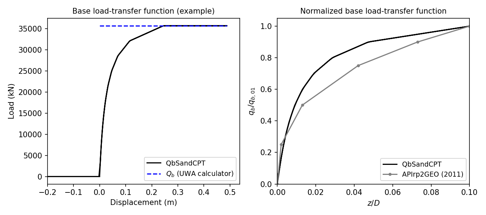

3.1.5.42. QbSandCPT Material
This command is used to construct a QbSandCPT uniaxial material object:
- uniaxialMaterial QbSandCPT $matTag $qp $D $t $dcpt
Argument |
Type |
Description |
|---|---|---|
$matTag |
integer |
integer tag identifying material |
$qp |
float |
end bearing mobilised at large displacements |
$D |
float |
pile outer diameter |
$t |
float |
pile wall thickness |
$dcpt |
float |
diameter of the standard CPT probe (see note) |
Note
The nominal value of the diameter of the standard CPT probe is 35.7mm.
3.1.5.42.1. Description
The QbSandCPT function implements the base-load transfer function, commonly referred to as
the \(q_z\) curve or spring, according to the new Unified CPT-based method for driven piles in
sands.
End bearing capacity
The material calculates the base or end bearing capacity according to the formulation given in [LehaneEtAl2020a]. The expression for the base capacity is given by Eq. (3.1.5.10).
where \(\mathrm{q}_{\mathrm{b} 0.1}\) is the ultimate unit base resistance mobilized at a settlement of 10% of the pile diameter, given by Eq. (3.1.5.11).
The parameter \(\mathrm{q}_{\mathrm{p}}\) represents the mobilised end bearing at large displacements by a pile at the level of the pile base by a pile with a ficticious diameter of \(D_{eq}=A_{re}^{0.5}\). Several techniques can be employed for estimate \(\mathrm{q}_{\mathrm{p}}\). In sands that are relatively homogeneous, one can consider \(\mathrm{q}_{\mathrm{p}}\) to be the average value of cone resitance within a zone 1.5D above and below the pile base. In more heterogeneous locations, the approaches discussed in [LehaneEtAl2020a] may be employed.
Load-transfer function
The non-linear end bearing-displacement response obeys the hyperbolic function as defined by [LehaneLiBittar2020b]. Unit end bearing, \(\mathrm{q}_{\mathrm{b}}\), is assumed to be fully mobilized at a pile base displacement value of 0.1D in APIrp2GEO standard (2011). This criterion was also maintained in the unified method. The proposed expression to represent the variation of pile base load with base displacement follows a hyperbolic function of the form:
with \(z_{\mathrm{b}}\) as the pile base displacement and \(\mathrm{q}_{\mathrm{b}0.1}\) calculated as indicated in Eq. (3.1.5.11).
3.1.5.42.2. Example
Below, examples are provided on how to use this material. The input data assumed is based on a typical sand site in the Gulf of Mexico (referred to as Site A in [LehaneEtAl2005]). The simulated end bearing behavior for this example is shown in the following figure. As expected, for tension loading there is no end bearing.

The simulated end-bearing response by the material is shown in the left plot. Users can verify that the internally computed ultimate unit base resistance mobilized at a settlement of 10% of the pile diameter (\(q_{b 0.1}\)) is 7.629MN, which corresponds to the value computed using the UWA calculator.
The right plot compares the normalized form of the simulated QbSandCPT response against the
load-transfer curve recommended in API (2011). This comparison lead to the same conclusions in
[LehaneLiBittar2020b]. The proposed back-bone curve mathes relatively well the API (2011)
recommendations for \(q_{b}/q_{b 0.1}\) ratios lower than 0.4. For greater ratios, the unified
CPT-based end bearing curve is stiffer than API formulae.
Example using default unit system
The following constructs a QbSandCPT material with a tag of 1, \(q_p\) of 50000 kPa, \(D\) of 2.44 m, \(t\) of 0.0445 m and \(d_{CPT}\) of 35.7 mm.
Tcl Code
uniaxialMaterial QbSandCPT 1 50000. 2.44 0.0445 35.7e-3
Python Code
uniaxialMaterial('QbSandCPT', 1, 50000. 2.44, 0.0445, 35.7e-3)
More details on the implementation, validation and benchmark of the TzSandCPT material are published
in a conference paper in the ISC’7 Proceedings.
Code Developed by: csasj
Lehane, B. M., Schneider, J. A. A., & Xu, X. (2005). A review of design methods for offshore driven piles in siliceous sand.
Lehane, B. M., Liu, Z., Bittar, E., Nadim, F., Lacasse, S., Jardine, R., Carotenuto, P., Rattley, M., Gavin, K., & More Authors (2020). A New ‘Unified’ CPT-Based Axial Pile Capacity Design Method for Driven Piles in Sand. In Z. Westgate (Ed.), Proceedings Fourth International Symposium on Frontiers in Offshore Geotechnics (pp. 462-477). Article 3457